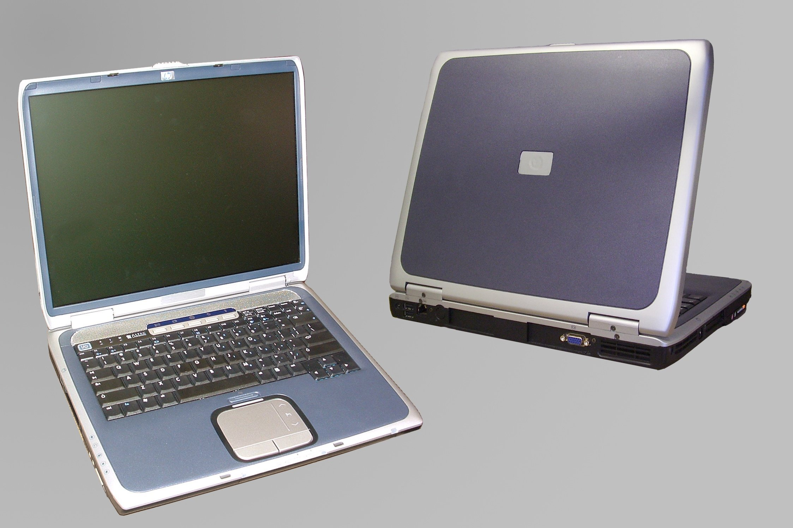

Giuseppe nasce nel 1990 aTreviglio, cresce e studia aCassano D'Adda. Nell'anno 2005 ricevette il suo primo computer portatile unHp Pavilion ZE4900. Nei suoi primi anni di utilizzo fu davvero difficile ed allo stesso tempo affascinante capirne il suo funzionamento. Ottenere informazioni sul web non era semplice come lo è oggi, quindi le varie fasi di apprendimento andavano molto per le lunghe.. A quel tempo utilizzare un Pc era considerato una sorta diperdita del proprio tempoperchè in quegli anni il suo utilizzo non era ben definito in ambito lavorativo. Studiò per diversi anni come autoditatta grazie alle risorse disponibili sul web. Iniziò a lavorare come dipendente in vari ambiti senza sentirsi mai appagato dalle varie mansioni ricoperte. Dopo tempo volle provare ad avviare una sua attività inerente la vendita di abbigliamento al dettaglio, aprendo una boutique nei pressi dellago di Iseo, più precisamente a Sarnico. Proseguì con la sua attività per 5 anni, dopodichè realizzò che non essendo mosso dalla passione per quel tipo di attività forse era meglio cedere l'attività. Successivamente alla chiusura della sua attività dedicò il tempo ad una pratica sportiva molto singolare per circa 3 anni e mezzo in attesa di nuove idee.. i 3 anni terminarono con un incidente che lo costrinse a terminare la pratica sportiva e a riconcigliarsi con la realtà di tutti i giorni, fu così che decise di iscriversi alle scuole serali di informatica e telecomunicazioni
Centered paragraph.